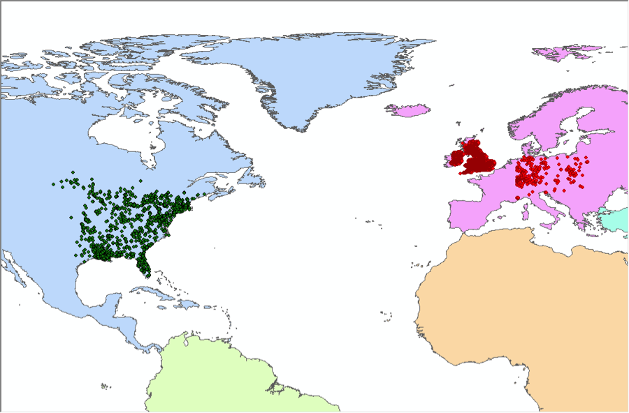
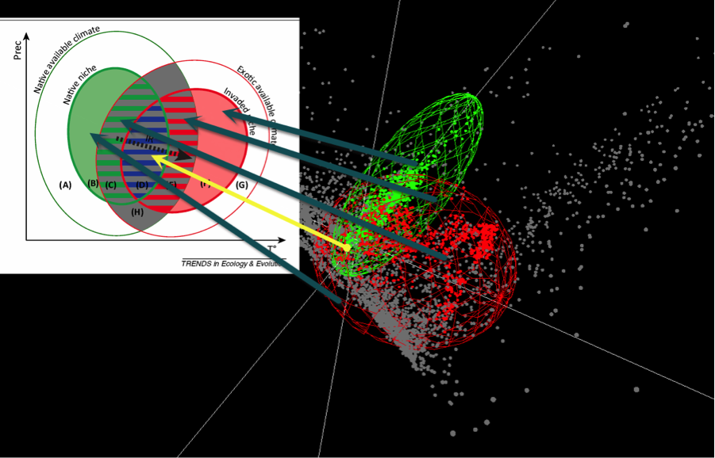

Analyze niche components intuitively
Guisan et al., (2014) noted the importance of distinguishing different niche components when determining whether or not a species’ niche was conservative. NicheA provides a novel function to observe different niche components intuitively.
Assume we have a virtual species whose native distribution area is North America, and the exotic distribution area is Europe (Fig. 1). After generating two Ns based on the occurrences above (Fig. 1), a scenario in E space can be drawn in NicheA (Fig. 2). Fig. 3 shows this scenario and interrelated components in Guisan et al. (2014).
Figure 1.
A virtual species whose native distribution area is North America, and the exotic distribution area is Europe. The green points are the occurrences in the native area. Red points are the occurrences in the invasive area.

Figure 2.
Generate N(s) based on the occurrence points.
Figure 3.
The relationship between niche components outlined in Guisan et al. (2014) in conjunction with the virtual scenario in NicheA. The red ellipsoid is the native niche of the virtual species. The red points inside the ellipsoid are the occurrence points from the native distribution area. The green ellipsoid is the invaded niche, and the green points within the ellipsoid are the occurrence points from the invasive area. The arrows show the relationship between the different components and the two diagrams.
